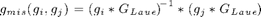

Misorientation Analysis
Analyse interior misorientation and misorientation between neighboured grains.
| On this page ... |
| Intergranular Misorientation |
| Boundary Misorientation |
Beside the influence of the choosen high-angle theshold (see demo) on misorientation there are manifold ways to explain boundary and intergranular grain properties and its texture.
One could explain misorientation as the orientation needed to rotate uppon modulo crystal symmetry,

or the other way round depending on the point of view.
Let us first import some EBSD data by a script file
loadaachen;
Undefined function or variable 'loadaachen'. Error in ==> MisorientationAnalysis at 23 loadaachen;
and regionalize our investigation area into grains
[grains ebsd] = segment2d(ebsd,'angle',15*degree);
Intergranular Misorientation
Let us inspect the misorientation from the assigned mean orientation of each grain to its corresponding ebsd data
ebsd_mis_m = misorientation(grains,ebsd)
The function returns an new EBSD object holding the misorientation. We can inspect the angular misorientation distribution by the command hist.
hist(ebsd_mis_m,30)
Since we know each location, we can plot it spatially, and see where it differs
close all; plotspatial(ebsd_mis_m,'r',vector3d('polar',pi/6,pi/8)) hold on, plotboundary(grains)
Since it is a new ebsd object holding the calculations, we can calulate an orientation density function out using the calcODF command, hence we can name it as misorientation density function.
odf_mis_m = calcODF(ebsd_mis_m,'halfwidth',5*degree,'phase',1);
thereinafter the retrieve misorientation data set could be used to estimate a misorientation density function for each grain.
k = kernel('de la Vallee Poussin','halfwidth',2*degree); grains = calcODF(grains,ebsd_mis_m,'kernel',k,'exact',... 'property','ODF_mis_mean')
the calculated ODFs are stored as a property in each grain, here as field 'ODF_mis_mean', so it can be accessed and manipulated by the function grainfun
Boundary Misorientation
Futhermore we can use the orientation of each grain to calculate the orientation needed to be its neighbour grain, since we have crystal symmetrie this is currently only done for neighbourd grains of the same phase
ebsd_mis_n = misorientation(grains)
and again take a look on the angular misorientation histogram
close all;
hist(ebsd_mis_n(1),63)
Now let us plot those two kinds of misorientation together, the misorientation to mean and the misorientation to neighbours. As one can see, the frequency decrease in the near of the choosen threshold
hist([ebsd_mis_n,ebsd_mis_m]) legend('phase(1) to neighbour','phase(2) to neighbour','phase(1) to mean','phase(2) to mean') line([12.5 12.5],[0 1],'color','k','linestyle','--') text(13.5,0.9,'threshold','rotation',-90)
the influence may be a criteria for the selection of the misorientation threshold when segmenting.
The misorientation between neighboured grains could be visualised with the plotboundary command
close all; plotboundary(grains,'property','colorcoding','hkl')
As spoken to above we have calculated a new ebsd object holding the misorientation to neighbours, we can use it to calcutate a boundary misorientation density function
odf_mis_n = calcODF(ebsd_mis_n,'phase',2,'exact') plotipdf(odf_mis_n,vector3d(0,0,1))
the mode may be in terms of CSL (coincidence site lattice) a boundary
annotate( CSL(3) )
and it is possible to select pairs of grains with such a common boundary
close all; grain_selection = find(grains,CSL(3),2*degree,'misorientation') plotboundary(grain_selection,'property',CSL(3))
and so we can take a look on (a not after volume portion weighted) the ODF of these neighboured grains
odf_selection = calcODF(grain_selection,'phase',1,'silent'); plotpdf(odf_selection,[Miller(1,0,0) Miller(1,1,0) Miller(1,1,1)],'antipodal',... 'position',[100 100 600 300])